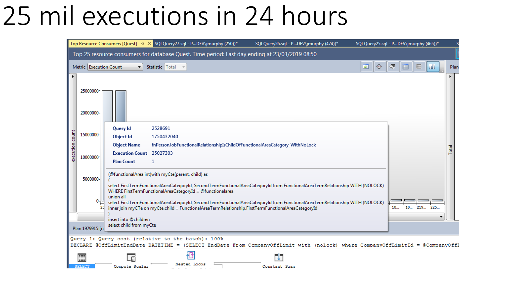

One of the most complex projects I worked on was the Restrictions system at a global executive recruitment firm.
The system was designed to enforce legal and reputational safeguards by ensuring the firm did not contact individuals covered by contractual hiring restrictions.
For example, if hired to find a CEO for a multinational bank like Barclays, the firm might agree not to approach any marketing managers globally for a set duration.
While the front-end representation was a simple restriction flag, the back-end logic was highly complex. The system had to process deeply nested company hierarchies and normalized relational database structures, tracking roles, departments, and job histories of individuals.
Restrictions could be set at individual or company-wide levels, requiring continuous post-processing jobs to check for changes like role movements, departures, or new assignments. This processing logic had to account for both company-down and person-up evaluations, and was prone to issues like recursive references and long-running SQL Server jobs, which sometimes caused performance bottlenecks or P1 incidents.
The complexity and scale occasionally led to delays, risking consultants contacting restricted individuals before flags were updated—potentially breaching legal contracts.. The failures weren't caused by technical debt — they stem from fundamental design decisions. I originally architected Restrictions as a relational model within SQL Server, but as the product and its business logic have evolved, I’ve come to the conclusion that we are using the wrong technology for the job.
In this post, I walk through the evolution of Restrictions, the current architecture, and the challenges that arise from trying to simulate graph traversal using a relational model. Then, I present a compelling case for moving Restrictions into a graph database — a model far more suited to the relationships and reasoning this product depends on.
Restrictions is one of the most business-critical features within Quest. It protects us from reputational and legal risk by ensuring our consultants do not engage with individuals who are off-limits, under embargo, or already engaged. It began with a simple goal — determine if someone is restricted — but the business logic has expanded significantly. We now support over 22 types of restrictions and must handle complex cases like reservations, job functionality, company structures, and M&A-driven hierarchy changes.
The original system relied on SQL stored procedures to infer restriction state by joining large numbers of tables with temporal and conditional logic. This worked when the problem was small. But today, it’s clear that SQL Server is fundamentally unsuited to accurately, consistently, and efficiently answering the question: “Is this person restricted right now?”
The current system uses two master stored procedures — one for people, one for companies — which recursively join tables, traverse parent/child company relationships, and recalculate every restriction every time. This includes:
Asking asimple question such as - is a given person restricted based upon their status within a company assessment led to the following SQL logic being executed
Within this query, we had 9 tables, 19 business process categories, 2 business process role status category codes, 2 personrestrictioncategory codes
This type of logic was typical of using TSQL to solve the problem - bear in mind that there were 21 types of restriction to apply to a person. So any lateral career move by an individual resulted in 21 stored procedures like this being executed, and there were 10s of thousands of Person changes in our system every day
I performed an analysis that revealed that on a typical day, we had 25 million invocations of one of our central SQL Functions used in restrictions, and it resulted in just 373 updates to our system
This approach has major downsides:
We tried to patch over the flaws with a “real-time badge” system, but that in itself has added 247,000 entries to a tracking table in production. These layers of indirection, compensating logic, and runtime patching are signals of a flawed design pattern.
Restrictions logic requires graph traversal. Whether it’s checking if a job falls under a company-wide off-limit, or whether a person’s placement still binds them within a company family tree, the underlying data model is a graph of entities and relationships. But in SQL Server, those relationships are implicit, not native. We simulate them through joins and recursive CTEs.
Every production incident over the past three years has followed a familiar theme: the system fails to recognize a restriction due to complexity in traversing jobs, companies, and roles. These failures have high reputational impact and take considerable effort to debug.
Graph databases are purpose-built for these kinds of problems. Graph databases hold the relationships between data as a priority
Instead of joining rows, they follow relationships. Nodes represent people, companies, jobs, restrictions. Relationships like WORKS_AT, PLACED_IN, or COVERED_BY explicitly model the connections we care about.
Traversal in a graph is lightweight and constant-time per hop — whether you're 2 or 20 levels deep in a company structure. We don’t have to re-derive anything. We just ask: “Can I navigate from this Person node to a Restriction node?” If yes, the person is restricted.
| Aspect | Relational (SQL Server) | Graph (Neo4j) |
|---|---|---|
| Data Structure | Tables joined by foreign keys | Nodes and relationships |
| Traversal | Requires recursive joins and CTEs | Direct and native — follow edges |
| Restriction Evaluation | Recalculated with every query or persisted snapshot | Inferred instantly from graph structure |
| Debugging | Hard to trace joins or CASE logic | Each edge is a visible path |
| Performance | Degrades with complexity and size | Linear with depth, constant-time per hop |
| Maintainability | Large stored procedures, fragile to schema change | Schema-free traversal, declarative Cypher queries |
| Suitability | Best for tabular data, not relationships | Ideal for interconnected, rule-based systems |
In Neo4j, we can model a Person who holds a Job at a Company. That company is part of a parent hierarchy, and at the top sits a Worldwide OffLimit. If all nodes and relationships are in place, the graph tells us this person is covered — no stored proc required.
When a job ends, we remove that node — the graph updates automatically. When a WWOL expires, we remove the edge — all associated people are instantly unaffected. No reprocessing. No snapshot table. No recursion.
We would use Event Streaming from SQL Server to maintain the graph. Only relevant changes (e.g. job current flag toggles) would trigger updates. Graph changes are fast, append-only, and logged. I’ve already used this approach in EventStream to map foreign key relationships to root entities.
Neo4j is the ideal fit for this. It’s mature, widely supported, and already proven in our environment. We could host it ourselves or use GrapheneDB as a managed provider. The existing restriction APIs could be refactored to call the graph service directly, removing the need for persistent badge tables or recalculation logic.
The current Restrictions system is a patchwork of stored procedures, recursive joins, runtime recalculation, and workaround flags. We’ve stretched the relational model beyond what it was designed for. Restrictions is a graph problem, and we should solve it with graph technology.
I architected the current solution, and I’ve lived through every production incident that followed. I now believe that fully migrating Restrictions to a graph database — powered by clean event streaming from our transactional system — is the only way to close this out with confidence.
This move would modernize the product, improve accuracy, reduce dev effort, and future-proof the platform. It’s the right design for the logic we now own.
Authored by John Murphy • GitHub: [your-handle] • LinkedIn: [your-link]